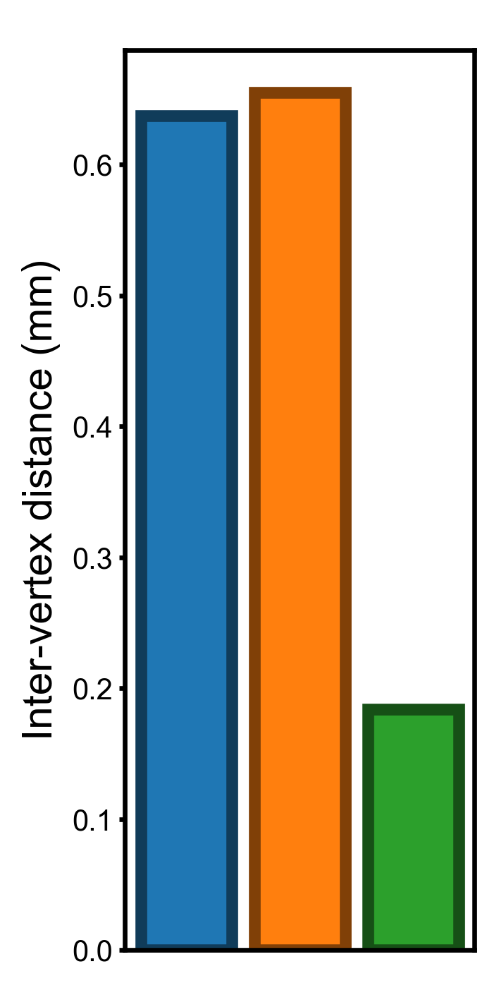
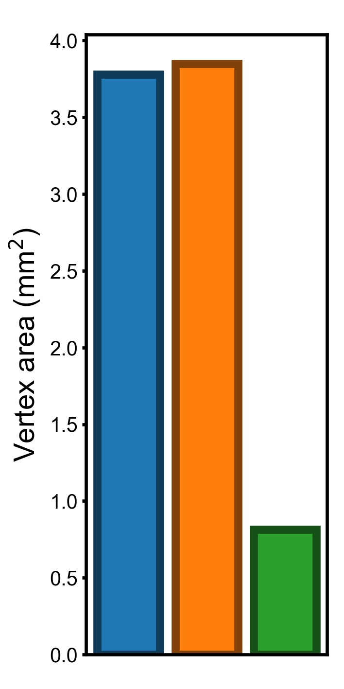
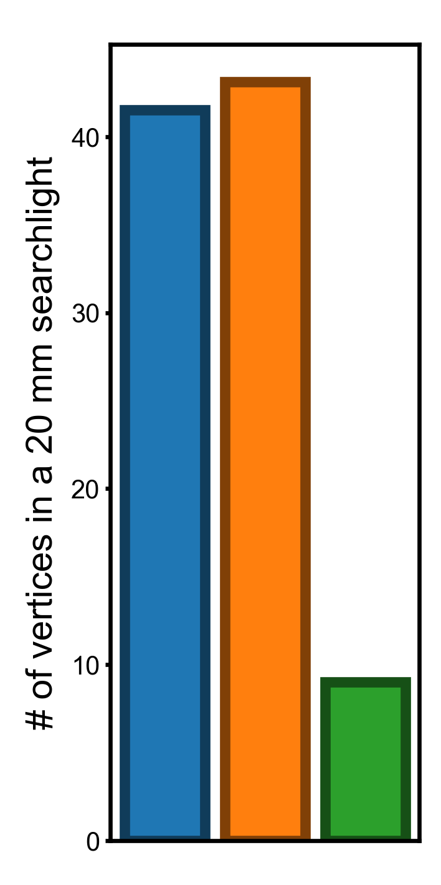
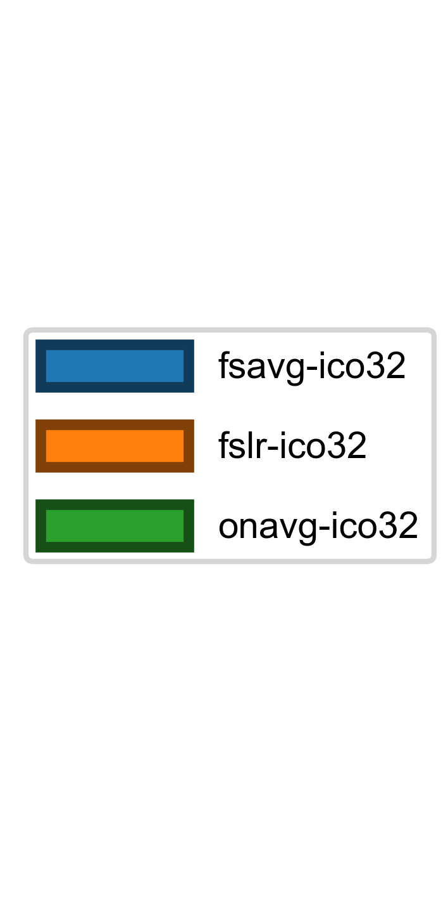
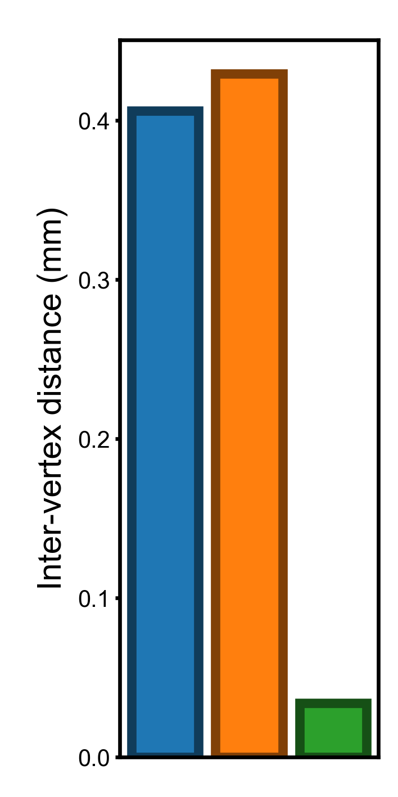
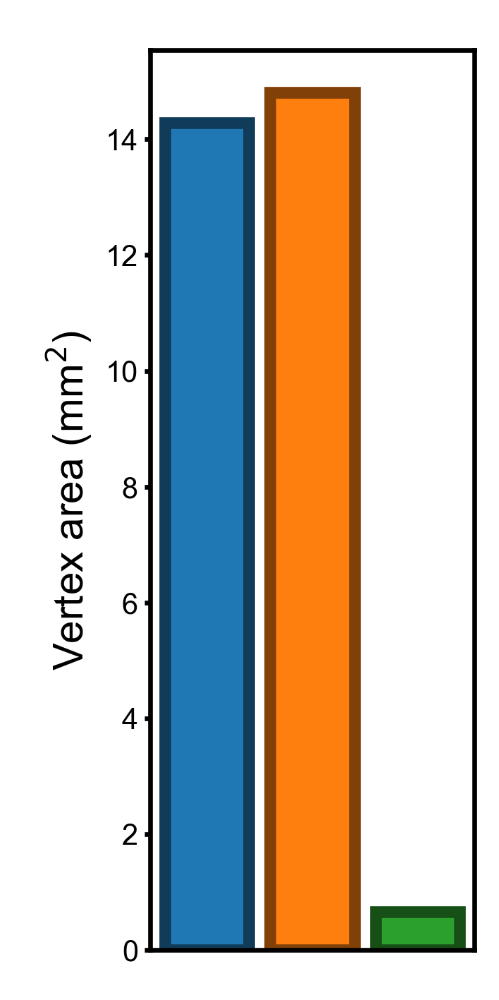
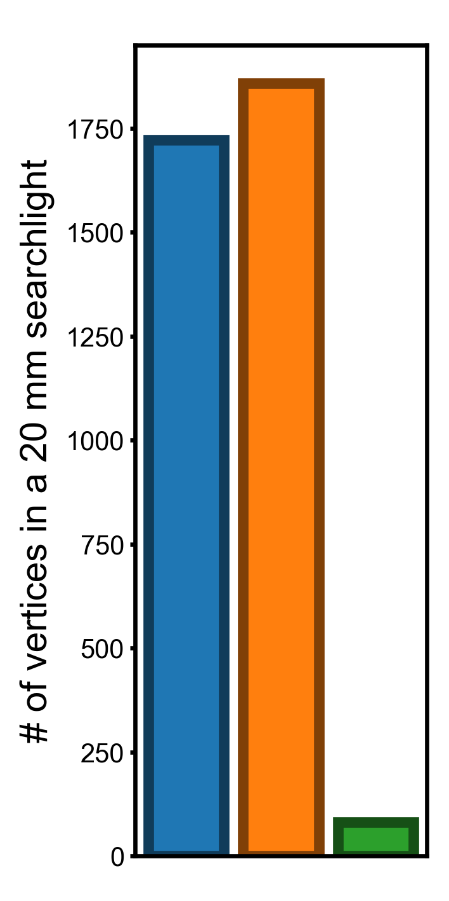
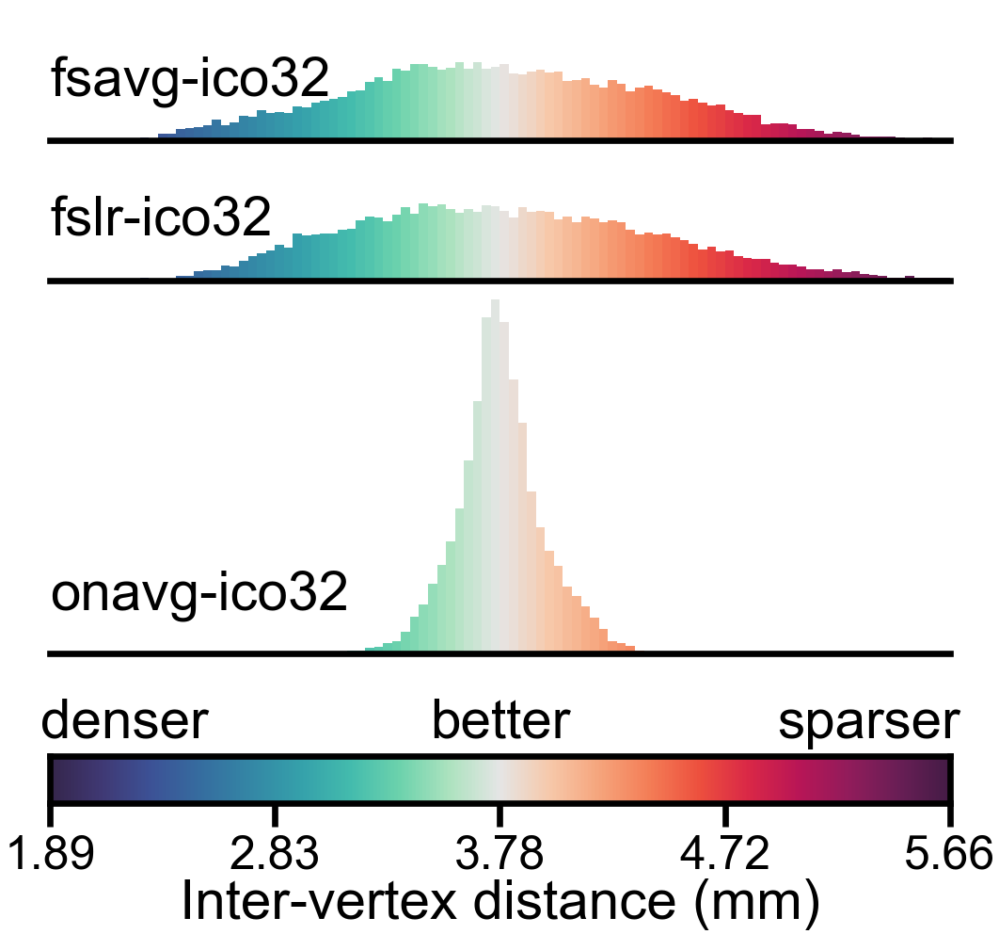
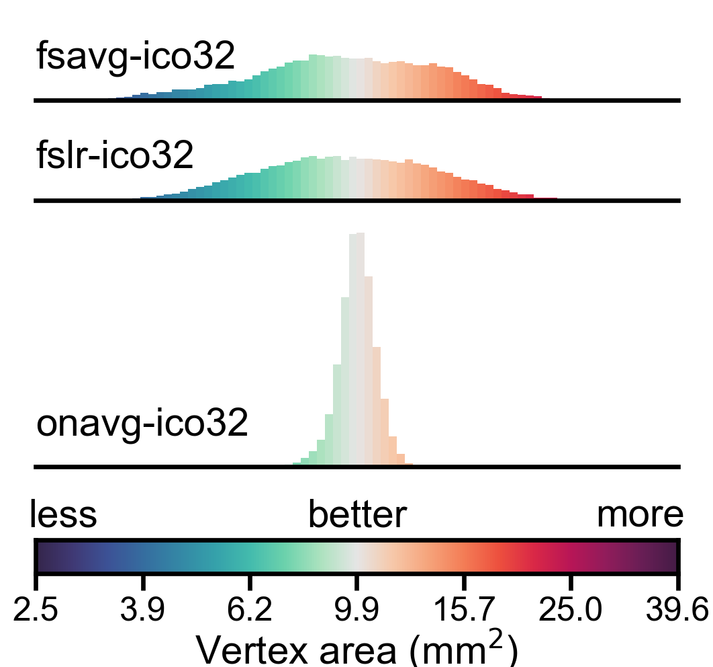
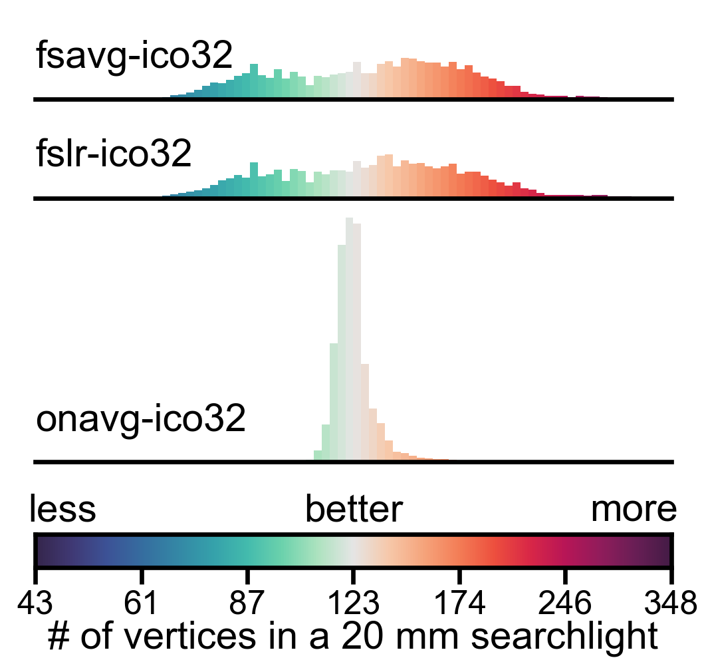

Variation in vertex properties across the cortex
Contents
Variation in vertex properties across the cortex#
This Notebook shows how to quantify variation in other vertex properties across brain regions, that is, vertex area (the area occupied by each cortical vertex, 'area') and the number of vertices in a 20 mm searchlight ('sl_count').
In a densely sampled region, each vertex occupies a smaller area on the cortex, and the number of vertices in a searchlight is larger; in a sparsely sampled region, each vertex occupies a larger area on the cortex, and the number of vertices in a searchlight is smaller. Therefore, larger variation in these properties indicates that the cortex is unevenly sampled in the template space.
We will also go through how to visualize these variations in this Notebook.
Preparations#
First we import the packages and set the font type for plotting.
import numpy as np
from scipy.interpolate import interp1d
import neuroboros as nb
import matplotlib.pyplot as plt
import matplotlib as mpl
import seaborn as sns
from IPython.display import display, HTML
mpl.rcParams['font.family'] = 'Arial'
and we define the same customized color map as in the previous Notebook.
nc = 10
colors = np.concatenate(
[sns.color_palette("mako", nc)[1:],
[[0.9, 0.9, 0.9]],
sns.color_palette("rocket", nc)[1:][::-1]],
axis=0)
cmap = mpl.colors.LinearSegmentedColormap.from_list('mako_rocket', colors)
Computing vertex properties#
We compute the vertex properties for each tempalte space and store them in the vertex_properties dictionary.
Inter-vertex distance can be computed in the same way as the previous Notebook.
vertex_properties = {}
spaces = ['fsavg-ico32', 'fslr-ico32', 'onavg-ico32']
for space in spaces:
ivd = []
for lr in 'lr':
coords, faces = nb.geometry('midthickness', lr, space)
surf = nb.surface.Surface(coords, faces)
neighbors = surf.neighbors
distances = nb.distances(lr, space)
d = []
for i, nbrs in enumerate(neighbors):
d.append(distances[i, nbrs].mean())
d = np.array(d)
ivd.append(d)
vertex_properties['ivd', space] = np.concatenate(ivd)
nb.morphometry is a function that loads group-based morphometric measures.
“area.mid” is the vertex area based on the midthickness surface, which is halfway between the pial surface and the white matter surface (i.e., the middle of the gray matter).
for space in spaces:
area = [nb.morphometry('area.mid', lr, space) for lr in 'lr']
masks = [nb.mask(lr, space) for lr in 'lr']
vertex_properties['area', space] = np.concatenate(
[_[m] for _, m in zip(area, masks)])
nb.sls returns a list, where each entry is a NumPy array comprising the vertex indices for a searchlight center.
Therefore, the length of the NumPy array is the number of vertices in the corresponding searchlight.
for space in spaces:
counts = []
for lr in 'lr':
sls = nb.sls(lr, 20, space, mask=False)
counts += [len(_) for _ in sls]
vertex_properties['sl_count', space] = np.array(counts)
Standard deviation of vertex properties across the cortex#
In this part we compute and visualize the standard deviation of the three vertex properties. The standard deviation of these properties have the same units as the original vertex properties, and it is easy to interpret them.
properties = [('ivd', 'Inter-vertex distance (mm)'),
('sl_count', '# of vertices in a 20 mm searchlight'),
('area', 'Vertex area (mm$^2$)')]
colors = np.array(sns.color_palette('tab10'))
for (prop, name) in properties:
fig, ax = plt.subplots(1, 1, figsize=[_/2.54 for _ in (3, 6)])
stds = np.array([np.std(vertex_properties[prop, space])
for space in spaces])
bars = []
for i, space in enumerate(spaces):
c = colors[i]
b = ax.bar(i, stds[i], color=c, edgecolor=c * 0.5, label=space, linewidth=2)
bars.append(b)
ax.set_xticks([])
ax.set_ylabel(name, size=7, labelpad=2)
fig.subplots_adjust(bottom=0.05, top=0.95, left=0.25, right=0.95)
ax.tick_params(axis='both', which='major', labelsize=5, size=1, pad=1)
plt.savefig(f'figures/std_across_vertices_{prop}.png', dpi=600)
plt.close()
fig, ax = plt.subplots(1, 1, figsize=[_/2.54 for _ in (3, 6)])
ax.legend(bars, spaces, loc='upper center', ncol=1,
fontsize=7, handlelength=4, handleheight=1.4,
labelspacing=1, borderaxespad=6, fancybox=True)
ax.axis('off')
plt.savefig(f'figures/variation_across_vertices_legend.png', dpi=600)
plt.close()
Standard deviation across the cortex (smaller is better)#




Variance of vertex properties across the cortex#
If we measure the variation using variance, the difference between template spaces will be larger (squares of those based on standard deviations).
for (prop, name) in properties:
fig, ax = plt.subplots(1, 1, figsize=[_/2.54 for _ in (3, 6)])
vv = np.array([np.var(vertex_properties[prop, space])
for space in spaces])
bars = []
for i, space in enumerate(spaces):
c = colors[i]
b = ax.bar(i, vv[i], color=c, edgecolor=c * 0.5, label=space, linewidth=2)
bars.append(b)
ax.set_xticks([])
ax.set_ylabel(name, size=7, labelpad=2)
fig.subplots_adjust(bottom=0.05, top=0.95, left=0.3, right=0.95)
ax.tick_params(axis='both', which='major', labelsize=5, size=1, pad=1)
plt.savefig(f'figures/variance_across_vertices_{prop}.png', dpi=600)
plt.close()
Variance across the cortex (smaller is better)#



Ratios of the variances#
for (prop, name) in properties:
vv = np.array([np.var(vertex_properties[prop, space])
for space in spaces])
r1, r2 = vv[2] / vv[:2] * 100 # ratios as percentages
name = name.split(' (')[0].lower()
display(HTML(
f'<p>The variance in {name} for the onavg template is {r1:.2f}% and '
f'{r2:.2f}% compared to those for fsavg and fslr, respectively.</p>'))
The variance in inter-vertex distance for the onavg template is 8.35% and 7.90% compared to those for fsavg and fslr, respectively.
The variance in # of vertices in a 20 mm searchlight for the onavg template is 4.73% and 4.39% compared to those for fsavg and fslr, respectively.
The variance in vertex area for the onavg template is 4.63% and 4.47% compared to those for fsavg and fslr, respectively.
Distribution of vertex properties#
In this part, we visualize the statistical distribution of the three representative vertex properties using histograms. We use a logrithmic scale for vertex area and searchlight vertex count, so that the distribution will look more “normal” (square root scale might work, too).
for (prop, name) in properties[1:]:
data_dict = {space: np.log(vertex_properties[prop, space])
for space in spaces}
mean = data_dict[f'onavg-ico32'].mean()
factor = {'sl_count': 1.5, 'area': 2}[prop] * np.log(2)
vmin, vmax = mean - factor, mean + factor
ticks = np.linspace(0, 1, 7) * (vmax - vmin) + vmin
norm = mpl.colors.Normalize(vmin=vmin, vmax=vmax, clip=True)
lim = [vmin, vmax]
fig = plt.figure(figsize=(4.5/2.54, 4.2/2.54), dpi=600)
for i, space in enumerate(spaces):
d = data_dict[space]
y = [0.85, 0.7, 0.3][i]
ax = fig.add_axes([0.05, y, 0.9, 0.2])
bins = np.linspace(lim[0], lim[1], 81)
for k in ['left', 'right', 'top']:
ax.spines[k].set_visible(False)
ax.set_yticks([])
ax.set_xticks([])
amplitudes, _, patches = ax.hist(
d, bins, orientation='vertical', density=True, clip_on=False)
for i, p in enumerate(patches):
v = bins[[i, i+1]].mean()
c = cmap(norm(v))
p.set_facecolor(c)
ax.set_xlim(lim)
ax.set_ylim([0, {'sl_count': 4.5, 'area': 3}[prop]])
ax.set_facecolor([1.0, 1.0, 1.0, 0.0])
ax.annotate(space, (0.05, y+0.09), xycoords='figure fraction', size=7,
va='top', ha='left')
ax2 = fig.add_axes([0.05, 0.14, 0.9, 0.05])
v = np.linspace(vmin, vmax, 10001)
c = cmap(norm(v))
ax2.imshow(c[np.newaxis], extent=[0, 1, 0, 1])
ax2.set_xlim([0, 1])
ax2.set_ylim([0, 1])
ax2.set_yticks([])
ax2.set_xticks(interp1d(lim, [0, 1], axis=0)(ticks))
if prop == 'sl_count':
ax2.set_xticklabels([f'{np.exp(_):.0f}' for _ in ticks], size=5)
else:
ax2.set_xticklabels([f'{np.exp(_):.1f}' for _ in ticks], size=5)
ax2.set_xlabel(name, size=7, labelpad=0)
ax2.set_aspect('auto')
ax2.tick_params(axis='both', pad=1, length=3, labelsize=6)
annots = [(0.04, 'less', 'left'), (0.5, 'better', 'center'),
(0.96, 'more', 'right')]
for x, txt, ha in annots:
ax2.annotate(txt, (x, 0.21), xycoords='figure fraction', size=7, ha=ha)
plt.savefig(f'figures/histogram_{prop}_ico32.png', dpi=600)
plt.close()


